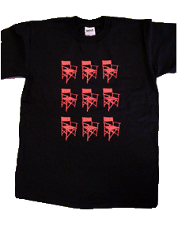
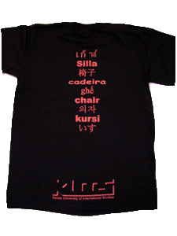

| スタッフTシャツ | |
| 黒赤：￥3,300
size:kids S, M, L, S,M,L |
|
|  | |
|  |
くいすぐっずメンバーが当日着るために作った作品。当日は５枚だけの販売でしたが、予約申込者殺到のため、浜風祭人気No1の商品となりました。
九椅子Tとスタンダードのデザインを組みわせて、かなり豪華になってます。
desigh: Hidemasa Yasuda（9chairs) Sintaro Yarimizo （standard)
|
| backside | |